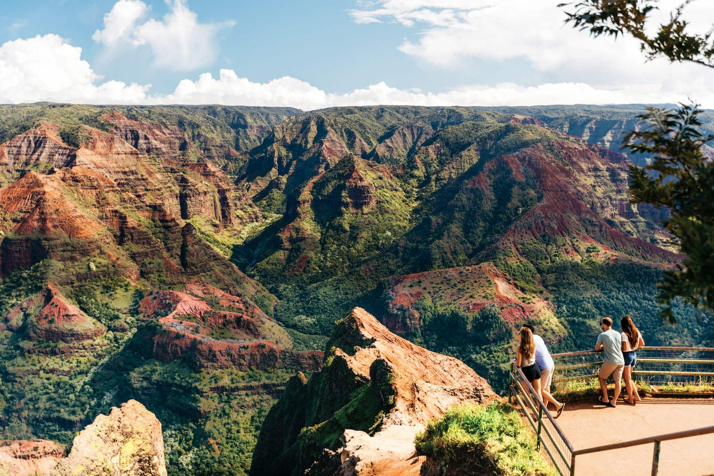
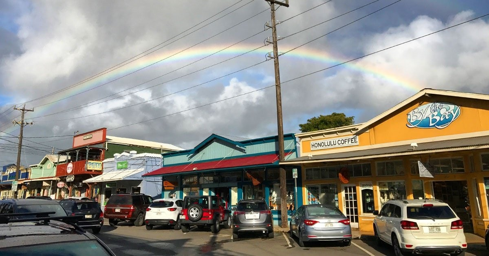

Hawaii is a land of great diversity, beauty, and many contradictions. The permeating spirit of Aloha, the rich culture of the people, and the sacred and historical traditions passed down for generations continue to define these isolated islands. Mother Nature pulled out all the stops when forming this incredible place.From lush rainforests to barren deserts, Hawaii is as eclectic a place as you'll ever visit. A favorite getaway for people worldwide, Hawai'i has become famous for its miles of beaches, erupting volcanoes, lush rainforests, exquisite food, and exotic flora and fauna.
Hawaii (Hawaiian: Hawai‘i) is a group of volcanic islands in the central Pacific Ocean. The islands lie 2,397 miles from San Francisco, California, to the east and 5,293 miles from Manila, in the Philippines, to the west. The capital is Honolulu, located on the island of Oahu. In the 19th century, the Hawaiian Islands saw population expansion and the establishment of a plantation system for growing sugar cane, coffee and pineapples. The United States annexed the territory in 1898. On the morning of December 7, 1941, hundreds of Japanese fighter planes attacked the American naval base at Pearl Harbor near Honolulu, propelling the United States into World War II. Hawaii became the 50th U.S. state on August 21, 1959.
Here are some of the best islands to visit!
Oahu, “The Gathering Place,” is the most famous of all eight islands, with a little bit of everything for everyone. From bustling Honolulu to the quiet shores of the east side, visitors can be shopping in the city and then be swimming or lounging on white sandy beaches in less than 45 minutes.
Kauai is the “Garden Isle,” known for its colorful and lush vegetation, hippy vibes, and amazing hiking. It is the oldest of all the main islands and is heaven on Earth. It is quieter around Kauai, so don’t expect a big nightlife scene, but do expect private white beaches, blue water, and fantastic views of the mountains wherever you are.
Maui is not nearly as large as the Big Island, nor is it as small as Lanai, as bustling as Oahu or as quiet as Kauai. For many Hawaii vacationers, Maui is just right – offering a taste of just about everything the Aloha State has to offer, from impressive wildlife to intriguing history and culture. While on a visit here, you can shimmy alongside professional hula dancers, golf along coastal fairways, sail down a zip line, snorkel alongside five different types of sea turtles or simply lounge along some of Hawaii's most notable beaches.
The North Shore of Oahu refers to the geographic area between West Oahu’s Ka’ena Point and East Oahu’s Kahuku Point. The North Shore is well-renowned for its incredibly large waves during the Winter, breathtaking coastlines, and for attracting surfers from all around the globe. Famous North Shore surf spots include Waimea Bay, Sunset Beach, and Banzai Pipeline (Ehukai Beach).
Waimea Canyon, on Kauaʻi's West Side, is described as “The Grand Canyon of the Pacific.” Although not as big or as old as its Arizona cousin, you won’t encounter anything like this geological wonder in Hawaiʻi. Stretching 14 miles long, 1 mile wide and more than 3,600 feet deep, the Waimea Canyon Lookout provides panoramic views of crested buttes, rugged crags and deep valley gorges. The grand inland vistas go on for miles.The more than 3,500 ft. deep giant is home to the Waimea River and offers nature enthusiasts lush foliage, tropical cliffs, vibrant scenery, stunning waterfalls, and much more.
This small, quaint town on the northern shores of Maui is a must when you’re visiting. If you are looking for the best things to do in Maui, Paia has a lot of them! Once known as a center for the hippie counterculture, Pa’ia is now one of the most popular destinations in the country for those who enjoy windsurfing and artsy vibes.
Poke is one of the few local dishes that span all three styles of Hawaiian food. Pre-contact Hawaiians ate raw fish with limu (a local seaweed) and oil-rich kukui nuts (also known as candlenuts). In the 1970s, poke became a potluck and supermarket staple, eventually taking on such a strong cultural identity that Honolulu Magazine called it "Hawaii's hamburger." With the advent of Hawaiian Regional Cuisine, poke was ripe for adaptation to high-end appetizers, and ring-molded, jewel-toned fish glistened with sesame oil on expensive plates.
Manapua is a delicious thing filled with pork. That's both what the Hawaiian words mean that make up the name, and what it is. It's a near relative to the Chinese char siu bao—steamed pork bun. Other than growing a bit to a Hawaiian-sized portion, the sweet pork filling and steamed bun haven't really changed since they came over with Cantonese immigrants in the 19th century. Back then, the fluffy white buns were stacked in baskets, hung from sticks, and sold by street food hawkers. Later, the red-tinged pork (rosy from the addition of saltpeter) in buns was sold by traveling manapua men—and you thought the ice cream man was the highlight of the neighborhood.

Turn, turn, turn. That's the key to the Hawaiian version of grilled teriyaki chicken invented by poultry farmer Ernest Morgado. Huli means to turn, and the key to cooking the sweetened soy sauce marinated and basted chicken is to turn it over when the first side is done to keep the glaze from burning. The sugars in the sauce caramelize on the bird, giving it crispy edges, and the inside of a good version is remarkably juicy. Clouds of fragrant, teriyaki-perfumed air billow out from the grills during preparation, making this a classic dish at fundraising events and roadside stands, such as the ones you'll find toward the end of Maui's Road to Hana.
Flat coastal land filled with freshwater shrimp farms and big wave surfers in search of cheap, filling, delicious food combine to create the perfect environment for a fleet of food trucks selling garlic-doused shrimp on Oahu's North Shore. Giovanni's white trucks are the originals, but the plates of butter-laden crustaceans dot parking lots up and down the shore. Generous portions of of plump, curled shrimp are sauteed with what appears to be an entire head of garlic, diced finely. The tiny chunks work their way into every nook and cranny of the shrimp, under the shells, which are crisp from the pan, while a butter-thickened sauce spills over the generous scoops of rice. More than two decades after the original truck opened, boasting what it called shrimp scampi, there are now shrimp spots throughout the Hawaiian Islands. Giovanni's retains its top reputation, though, along with neighboring Romy's—which has its own shrimp farm on site, thus promising the freshest plates.